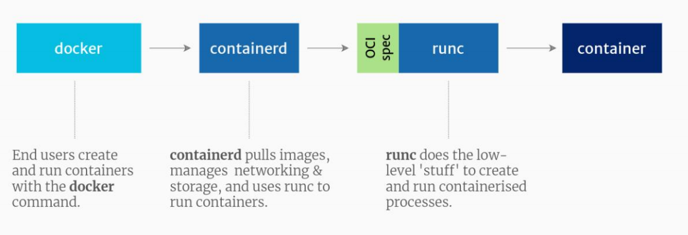
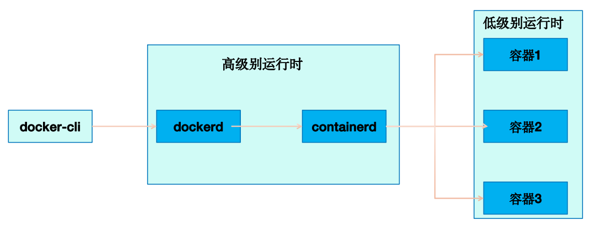
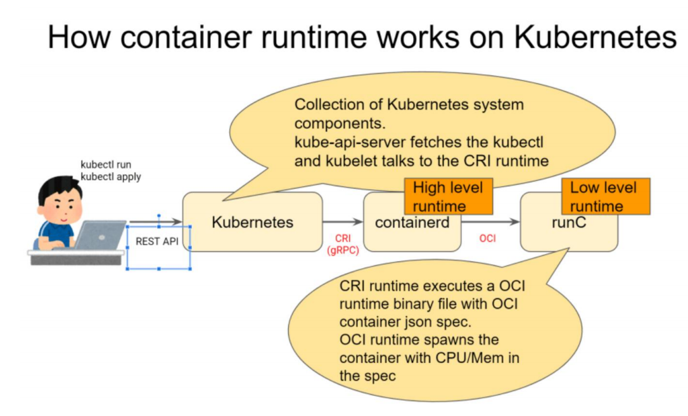
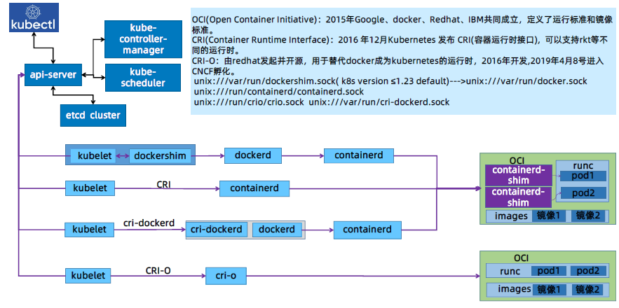
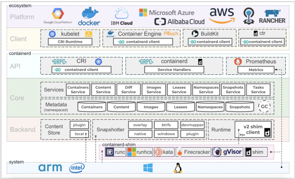
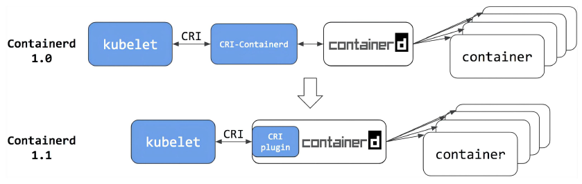
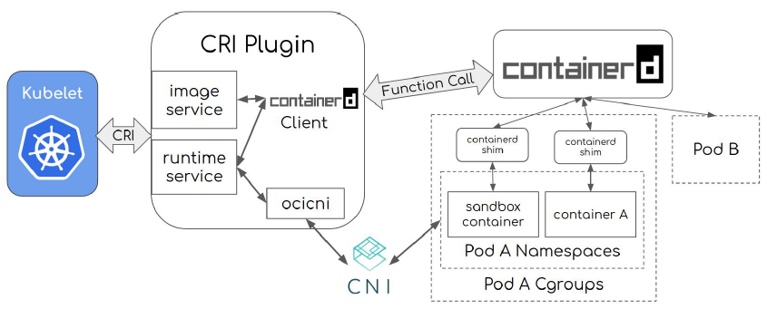
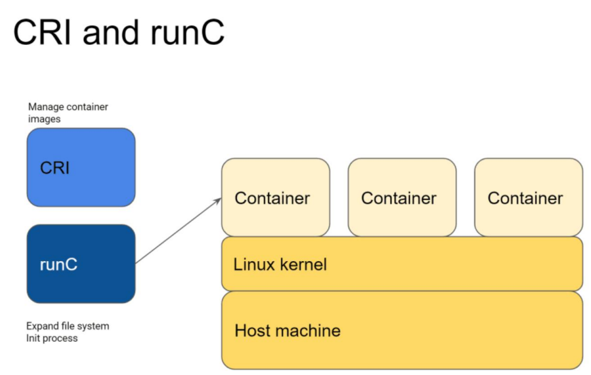
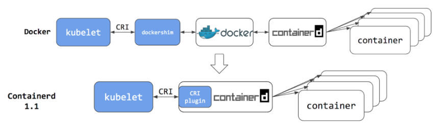

容器的核心技术：
容器技术除了 docker 之外，还有其它不同的容器技术，为了保证容器生态的标准性和健康可持续发展，包括Linux 基金会、 Docker、微软、红帽谷歌和、IBM、华为等公司在2015年6月共同成立了一个叫open container（OCI）的组织，其目的就是制定开放的标准的容器规范，目前OCI发布了runtime spec(运行时规范)（最核心规范之一）、image format spec(镜像格式规范)、distribution-spec(镜像分发规范)，这样不同的容器公司开发的容器只要兼容以上规范，就可以保证容器的可移植性和相互可操作性。
https://github.com/opencontainers
docker info
Default Runtime: runc
容器 runtime(runtime spec)：
-
常见的runtime：
- runc：目前 Docker 和 containerd 默认的 runtime，基于 go 语言开发，遵循 OCI 规范。
- crun： redhat 推出的运行时，基于 c 语言开发，集成在 podman 内部，遵循 OCI 规范。
- gVisor：google 推出的运行时，基于 go 语言开发，遵循 OCI 规范。

client 发送指令到 dockerd 调用 containerd(创建容器) 通过 runc 运行 container
docekrd 仅作为和外界客户端连接的一个通道，由containerd创建容器
k8s 1.24 省略 docker 作为默认运行时，直接使用 containerd，kubelet 接受 k8s server 端指令，然后直接传给 containerd。
低级容器运行时与高级容器运行时：
High-Level：高级运行时提供基于 API 的远程管理操作，客户端可以通过高级别运行时管理容器的整个生命周期(创建、删除、重启、 停止)，高级别运行时并不真正直接运行容器，而是调用低级别运行时运行，比如 dockerd、containerd 都是高级别运行时。
Low-Level ：接受高级别运行时的指令，按照响应的指令运行容器，因此低级别运行时真是运行容器的地方，例如 runc。


容器运行时 Containerd
容器运行时Docker与Containerd对比、优缺点，Containerd安装、常用客户端及命令使用简介
运行时简介：

Containerd简介：
2016年12月Docker公司宣布将 containerd 并捐赠给CNCF(2017年3月份加入CNCF)。
2019年2月28成为CNCF的毕业项目。
Containerd与kubernetes的结合可实现更快速的pod生命周期管理(创建、更新、删除等)，对内存及CPU资源限制更严格，系统IO性能也远高于docker.
Containerd基于插件化设计，方便后期配置变更与功能扩展。

Containerd在v1.0及以前版本(目前最新v1.6.8)将dockershim和docker daemon替换为cri-containerd+containerd，而在1.1版本时直接将cri-containerd内置在Containerd中，简化为一个CRI插件，用于实现和kubelet的对接。

Containerd内置的CRI(container runtime interface)插件实现了Kubelet CRI接口中的Image Service和Runtime Service，通过内部接口管理容器和镜像，并通过CNI(container network interface)插件给Pod配置网络。

Ubuntu安装containerd：
更新镜像仓库并安装依赖包：
root@ubuntu2204:~# apt update
root@ubuntu2204:~# sudo apt-get install apt-transport-https ca-certificates curl gnupg2 software-properties-common
导入docker的公钥：
root@ubuntu2204:~# curl -fsSL <https://download.docker.com/linux/ubuntu/gpg> | sudo gpg --dearmor -o /etc/apt/keyrings/docker.gpg
添加镜像源：
root@ubuntu2204:~#echo \\"deb [arch=$(dpkg --print-architecture) signed-by=/etc/apt/keyrings/docker.gpg] <https://mirrors.tuna.tsinghua.edu.cn/dockerce/>
linux/ubuntu \\$(lsb_release -cs) stable" | sudo tee /etc/apt/sources.list.d/docker.list > /dev/null
更新镜像仓库：
root@ubuntu2204:~# apt update
验证containerd版本：
root@ubuntu2204:~# apt-cache madison containerd.io
containerd.io | 1.6.8-1 | <https://mirrors.tuna.tsinghua.edu.cn/docker-ce/linux/ubuntu> jammy/stable amd64 Packages
containerd.io | 1.6.7-1 | <https://mirrors.tuna.tsinghua.edu.cn/docker-ce/linux/ubuntu> jammy/stable amd64 Packages
安装containerd：
root@ubuntu2204:~# apt install containerd.io=1.6.8-1
root@ubuntu2204:~# containerd --version
containerd containerd.io 1.6.8 9cd3357b7fd7218e4aec3eae239db1f68a5a6ec6
centos安装containerd：
# yum install -y yum-utils device-mapper-persistent-data lvm2
# yum-config-manager --add-repo <https://download.docker.com/linux/centos/docker-ce.repo>
# sudo sed -i 's+download.docker.com+mirrors.tuna.tsinghua.edu.cn/docker-ce+' /etc/yum.repos.d/docker-ce.repo
# yum list containerd.io --showduplicates | sort –r
# yum install containerd.io-1.6.8
containerd配置文件：
默认配置参数：
~# containerd config default
自定义配置：
~]# containerd config default > /etc/containerd/config.toml
61 sandbox_image = "registry.aliyuncs.com/google_containers/pause:3.7”
153 [plugins."io.containerd.grpc.v1.cri".registry.mirrors]
154 [plugins."io.containerd.grpc.v1.cri".registry.mirrors."docker.io"]
155 endpoint = ["<https://9916w1ow.mirror.aliyuncs.com>"]
~]# systemctl restart containerd && systemctl enable containerd
更新runc：
# wget <https://github.com/opencontainers/runc/releases/download/v1.1.4/runc.amd64>
# cp runc.amd64 /usr/bin/runc
# chmod a+x /usr/bin/runc
# runc -v
runc version 1.1.4
客户端使用：
containerd相比docker多了一个命名空间的逻辑概念，ctr命令默认是在default命名空间里，当使用crictl命令的时候，都是在k8s.io这个命名空间里的，所以不指定namespace会发现看到的镜像、容器等内容不一样。
ctr：
~]# ctr images pull docker.io/library/nginx:1.20.2
~]# ctr -n k8s.io images ls
~]# ctr images ls
运行容器并使用宿主机网络：
~]# ctr run -t --net-host docker.io/library/nginx:1.20.2 test-container1
nerdctl-是一个兼容docker的containerd的客户端,https://github.com/containerd/nerdctl
~]# wget <https://github.com/containerd/nerdctl/releases/download/v0.23.0/nerdctl-0.23.0-linux-amd64.tar.gz>
~]# tar xvf nerdctl-0.23.0-linux-amd64.tar.gz -C /usr/bin/
cni:
~]# wget <https://github.com/containernetworking/plugins/releases/download/v1.1.1/cni-plugins-linux-amd64-v1.1.1.tgz>
~]# mkdir /opt/cni/bin -pv
# tar xvf cni-plugins-linux-amd64-v1.1.1.tgz -C /opt/cni/bin/
创建容器并指定端口:
~]# nerdctl run -d -p 80:80 --name=nginx-web1 --restart=always nginx:1.22.0-alpine
~]# nerdctl ps
~]# nerdctl exec -it 858730bb0492 sh
~]# nerdctl run -d -p 8080:8080 --name=tomcat-web1 --restart=always tomcat:7.0.88-alpine
Q：grpc自己查一下

kubernetes环境中由kubelet接受指令通过CRI等标准调用运行时实现容器的生命周期管理。
K8S废弃Docker是怎么回事
1）CRI
K8s在1.5版本里，引入了一个新的接口标准：CRI（Container Runtime Interface），它主要用来规定如何调用容器运行时来管理容器和镜像，但这个接口标准和之前的Docker调用标准有不少差异，所以两者完全不兼容。这意味着，K8s可以撇开Docker，使用其它容器运行时（如rkt）。
由于Docker用户非常庞大，K8s也意识到了直接不兼容Docker会有许多不确定风险，当时，K8s用了一个临时方案，在K8s和Docker中间开发了一个Dockershim，主要用来将Docker的接口标准转换成CRI标准。
2）Containerd
Docker意识到K8s的改变，为了迎合K8s，将Docker Engine拆分成多个模块，其中Docker Daemon部分捐献给了CNCF，也就是containerd。
Containerd 作为 CNCF 的托管项目，自然是要符合 CRI 标准的。但 Docker 出于自己诸多原因的考虑，它只是在 Docker Engine 里调用了 containerd，外部的接口仍然保持不变，也就是说还不与 CRI 兼容。
在当时的K8s版本里，实际上有两种方法调用容器：
第一种是用 CRI 接口调用 dockershim，然后 dockershim 调用 Docker，Docker 再走 containerd 去操作容器。
第二种是用 CRI 接口直接调用 containerd 去操作容器。

很明显，第一种方法多了两层调用，性能明显不如第二种方法。所以K8s决定将dockershim移除，所以也就不能直接使用Docker了，在外界看来就像是K8s弃用了Docker。
3）弃用dockershim
2020年K8s发布1.20版本时，对外声明将在后续版本里（实际上是在22年的1.24版本里）移除dockershim，也就是取消对Docker的支持。当时，众多吃瓜群众理解错了意思，认为成了K8s弃用Docker。它实际上只是“弃用了 dockershim”这个小组件，也就是说把 dockershim 移出了 kubelet，并不是“弃用了 Docker”这个软件产品。
这个举措对K8s 和 Docker 来说都不会有什么太大的影响，因为他们两个都早已经把下层都改成了开源的 containerd，原来的 Docker 镜像和容器仍然会正常运行，唯一的变化就是 K8s绕过了 Docker，直接调用 Docker 内部的 containerd 而已。
4）K8s移除dockershim后对Docker的影响
虽然现在 Kubernetes 不再默认绑定 Docker，但 Docker 还是能够以其他的形式与 Kubernetes 共存的。
首先，因为容器镜像格式已经被标准化了（OCI 规范，Open Container Initiative），Docker 镜像仍然可以在 Kubernetes 里正常使用，原来的开发测试、CI/CD 流程都不需要改动，我们仍然可以拉取 Docker Hub 上的镜像，或者编写 Dockerfile 来打包应用。
其次，Docker 是一个完整的软件产品线，不止是 containerd，它还包括了镜像构建、分发、测试等许多服务，甚至在 Docker Desktop 里还内置了 Kubernetes。单就容器开发的便利性来讲，Docker 还是暂时难以被替代的，广大云原生开发者可以在这个熟悉的环境里继续工作，利用 Docker 来开发运行在 Kubernetes 里的应用。
再次，虽然 Kubernetes 已经不再包含 dockershim，但 Docker 公司却把这部分代码接管了过来，另建了一个叫 cri-dockerd的项目，作用也是一样的，把 Docker Engine 适配成 CRI 接口，这样 kubelet 就又可以通过它来操作 Docker 了，就仿佛是一切从未发生过。
综合来看，Docker 虽然在容器编排战争里落败，被 Kubernetes 排挤到了角落，但它仍然具有强韧的生命力，多年来积累的众多忠实用户和数量庞大的应用镜像是它的最大资本和后盾，足以支持它在另一条不与 Kubernetes 正面交锋的道路上走下去。而对于我们这些初学者来说，Docker 方便易用，具有完善的工具链和友好的交互界面，市面上很难找到能够与它媲美的软件了，应该说是入门学习容器技术和云原生的“不二之选”。